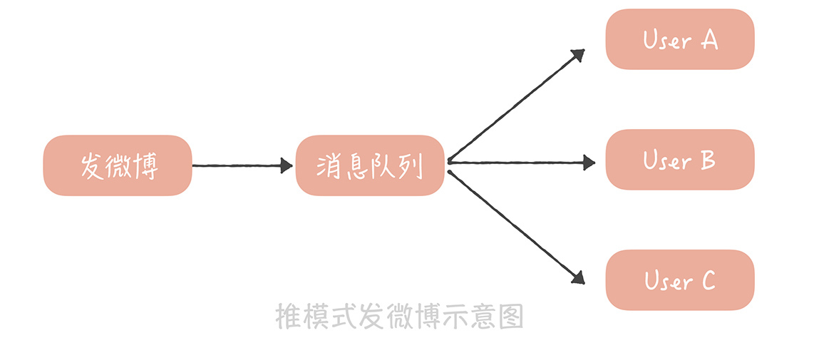

- 00 开篇词 为什么你要学习高并发系统设计？.md.html
- 01 高并发系统：它的通用设计方法是什么？.md.html
- 02 架构分层：我们为什么一定要这么做？.md.html
- 03 系统设计目标（一）：如何提升系统性能？.md.html
- 04 系统设计目标（二）：系统怎样做到高可用？.md.html
- 05 系统设计目标（三）：如何让系统易于扩展？.md.html
- 06 面试现场第一期：当问到组件实现原理时，面试官是在刁难你吗？.md.html
- 07 池化技术：如何减少频繁创建数据库连接的性能损耗？.md.html
- 08 数据库优化方案（一）：查询请求增加时，如何做主从分离？.md.html
- 09 数据库优化方案（二）：写入数据量增加时，如何实现分库分表？.md.html
- 10 发号器：如何保证分库分表后ID的全局唯一性？.md.html
- 11 NoSQL：在高并发场景下，数据库和NoSQL如何做到互补？.md.html
- 12 缓存：数据库成为瓶颈后，动态数据的查询要如何加速？.md.html
- 13 缓存的使用姿势（一）：如何选择缓存的读写策略？.md.html
- 14 缓存的使用姿势（二）：缓存如何做到高可用？.md.html
- 15 缓存的使用姿势（三）：缓存穿透了怎么办？.md.html
- 16 CDN：静态资源如何加速？.md.html
- 17 消息队列：秒杀时如何处理每秒上万次的下单请求？.md.html
- 18 消息投递：如何保证消息仅仅被消费一次？.md.html
- 19 消息队列：如何降低消息队列系统中消息的延迟？.md.html
- 20 面试现场第二期：当问到项目经历时，面试官究竟想要了解什么？.md.html
- 21 系统架构：每秒1万次请求的系统要做服务化拆分吗？.md.html
- 22 微服务架构：微服务化后，系统架构要如何改造？.md.html
- 23 RPC框架：10万QPS下如何实现毫秒级的服务调用？.md.html
- 24 注册中心：分布式系统如何寻址？.md.html
- 25 分布式Trace：横跨几十个分布式组件的慢请求要如何排查？.md.html
- 26 负载均衡：怎样提升系统的横向扩展能力？.md.html
- 27 API网关：系统的门面要如何做呢？.md.html
- 28 多机房部署：跨地域的分布式系统如何做？.md.html
- 29 Service Mesh：如何屏蔽服务化系统的服务治理细节？.md.html
- 30 给系统加上眼睛：服务端监控要怎么做？.md.html
- 31 应用性能管理：用户的使用体验应该如何监控？.md.html
- 32 压力测试：怎样设计全链路压力测试平台？.md.html
- 33 配置管理：成千上万的配置项要如何管理？.md.html
- 34 降级熔断：如何屏蔽非核心系统故障的影响？.md.html
- 35 流量控制：高并发系统中我们如何操纵流量？.md.html
- 36 面试现场第三期：你要如何准备一场技术面试呢？.md.html
- 37 计数系统设计（一）：面对海量数据的计数器要如何做？.md.html
- 38 计数系统设计（二）：50万QPS下如何设计未读数系统？.md.html
- 39 信息流设计（一）：通用信息流系统的推模式要如何做？.md.html
- 40 信息流设计（二）：通用信息流系统的拉模式要如何做？.md.html
- 加餐 数据的迁移应该如何做？.md.html
- 期中测试 10道高并发系统设计题目自测.md.html
- 用户故事 从“心”出发，我还有无数个可能.md.html
- 结束语 学不可以已.md.html
- 捐赠
39 信息流设计（一）：通用信息流系统的推模式要如何做？
你好，我是唐扬。
前两节课中，我带你探究了如何设计和实现互联网系统中一个常见模块——计数系统。它的业务逻辑其实非常简单，基本上最多只有三个接口，获取计数、增加计数和重置计数。所以我们在考虑方案的时候考察点也相对较少，基本上使用缓存就可以实现一个兼顾性能、可用性和鲁棒性的方案了。然而大型业务系统的逻辑会非常复杂，在方案设计时通常需要灵活运用多种技术，才能共同承担高并发大流量的冲击。那么接下来，我将带你了解如何设计社区系统中最为复杂、并发量也最高的信息流系统。这样，你可以从中体会怎么应用之前学习的组件了。
最早的信息流系统起源于微博，我们知道，微博是基于关注关系来实现内容分发的，也就是说，如果用户 A 关注了用户 B，那么用户 A 就需要在自己的信息流中，实时地看到用户 B 发布的最新内容，这是微博系统的基本逻辑，也是它能够让信息快速流通、快速传播的关键。 由于微博的信息流一般是按照时间倒序排列的，所以我们通常把信息流系统称为 TimeLine（时间线）。那么当我们设计一套信息流系统时需要考虑哪些点呢？
设计信息流系统的关注点有哪些
首先，我们需要关注延迟数据，也就是说，你关注的人发了微博信息之后，信息需要在短时间之内出现在你的信息流中。
其次，我们需要考虑如何支撑高并发的访问。信息流是微博的主体模块，是用户进入到微博之后最先看到的模块，因此它的并发请求量是最高的，可以达到每秒几十万次请求。
最后，信息流拉取性能直接影响用户的使用体验。微博信息流系统中需要聚合的数据非常多，你打开客户端看一看，想一想其中需要聚合哪些数据？主要是微博的数据，用户的数据，除此之外，还需要查询微博是否被赞、评论点赞转发的计数、是否被关注拉黑等等。聚合这么多的数据就需要查询多次缓存、数据库、计数器，而在每秒几十万次的请求下，如何保证在 100ms 之内完成这些查询操作，展示微博的信息流呢？这是微博信息流系统最复杂之处，也是技术上最大的挑战。
那么我们怎么设计一套支撑高并发大流量的信息流系统呢？一般来说，会有两个思路：一个是基于推模式，另一个是基于拉模式。
如何基于推模式实现信息流系统
什么是推模式呢？推模式是指用户发送一条微博后，主动将这条微博推送给他的粉丝，从而实现微博的分发，也能以此实现微博信息流的聚合。
假设微博系统是一个邮箱系统，那么用户发送的微博可以认为是进入到一个发件箱，用户的信息流可以认为是这个人的收件箱。推模式的做法是在用户发布一条微博时，除了往自己的发件箱里写入一条微博，同时也会给他的粉丝收件箱里写入一条微博。
假如用户 A 有三个粉丝 B、C、D，如果用 SQL 表示 A 发布一条微博时系统做的事情，那么就像下面展示的这个样子：
insert into outbox(userId, feedId, create_time) values("A", $feedId, $current_time); // 写入 A 的发件箱
insert into inbox(userId, feedId, create_time) values("B", $feedId, $current_time); // 写入 B 的收件箱
insert into inbox(userId, feedId, create_time) values("C", $feedId, $current_time); // 写入 C 的收件箱
insert into inbox(userId, feedId, create_time) values("D", $feedId, $current_time); // 写入 D 的收件箱
当我们要查询 B 的信息流时，只需要执行下面这条 SQL 就可以了：
select feedId from inbox where userId = "B";
如果你想要提升读取信息流的性能，可以把收件箱的数据存储在缓存里面，每次获取信息流的时候直接从缓存中读取就好了。
推模式存在的问题和解决思路
你看，按照这个思路就可以实现一套完整的微博信息流系统，也比较符合我们的常识。但是，这个方案会存在一些问题。
首先，就是消息延迟。在讲系统通知未读数的时候，我们曾经提到过，不能采用遍历全量用户给他们加未读数的方式，原因是遍历一次全量用户的延迟很高，而推模式也有同样的问题。对明星来说，他们的粉丝数庞大，如果在发微博的同时还要将微博写入到上千万人的收件箱中，那么发微博的响应时间会非常慢，用户根本没办法接受。因此，我们一般会使用消息队列来消除写入的峰值，但即使这样，由于写入收件箱的消息实在太多，你还是有可能在几个小时之后才能够看到明星发布的内容，这会非常影响用户的使用体验。

在推模式下，你需要关注的是微博的写入性能，因为用户每发一条微博，都会产生多次的数据库写入。为了尽量减少微博写入的延迟，我们可以从两方面来保障。
一方面，在消息处理上，你可以启动多个线程并行地处理微博写入的消息。
另一方面，由于消息流在展示时可以使用缓存来提升读取性能，所以我们应该尽量保证数据写入数据库的性能，必要时可以采用写入性能更好的数据库存储引擎。
比如，我在网易微博的时候就是采用推模式来实现微博信息流的。当时为了提升数据库的插入性能，我们采用了 TokuDB 作为 MySQL 的存储引擎，这个引擎架构的核心是一个名为分形树的索引结构（Fractal Tree Indexes）。我们知道数据库在写入的时候会产生对磁盘的随机写入，造成磁盘寻道，影响数据写入的性能；而分形树结构和我们在11 讲中提到的 LSM 一样，可以将数据的随机写入转换成顺序写入，提升写入的性能。另外，TokuDB 相比于 InnoDB 来说，数据压缩的性能更高，经过官方的测试，TokuDB 可以将存储在 InnoDB 中的 4TB 的数据压缩到 200G，这对于写入数据量很大的业务来说也是一大福音。然而，相比于 InnoDB 来说，TokuDB 的删除和查询性能都要差一些，不过可以使用缓存加速查询性能，而微博的删除频率不高，因此这对于推模式下的消息流来说影响有限。
其次，存储成本很高。在这个方案中我们一般会这么来设计表结构：
先设计一张 Feed 表，这个表主要存储微博的基本信息，包括微博 ID、创建人的 ID、创建时间、微博内容、微博状态（删除还是正常）等等，它使用微博 ID 做哈希分库分表；
另外一张表是用户的发件箱和收件箱表，也叫做 TimeLine 表（时间线表），主要有三个字段，用户 ID、微博 ID 和创建时间。它使用用户的 ID 做哈希分库分表。

由于推模式需要给每一个用户都维护一份收件箱的数据，所以数据的存储量极大，你可以想一想，谢娜的粉丝目前已经超过 1.2 亿，那么如果采用推模式的话，谢娜每发送一条微博就会产生超过 1.2 亿条的数据，多么可怕！我们的解决思路是： 除了选择压缩率更高的存储引擎之外，还可以定期地清理数据，因为微博的数据有比较明显的实效性，用户更加关注最近几天发布的数据，通常不会翻阅很久之前的微博，所以你可以定期地清理用户的收件箱，比如只保留最近 1 个月的数据就可以了。
除此之外，推模式下我们还通常会遇到扩展性的问题。在微博中有一个分组的功能，它的作用是你可以将关注的人分门别类，比如你可以把关注的人分为“明星”“技术”“旅游”等类别，然后把杨幂放入“明星”分类里，将 InfoQ 放在“技术”类别里。那么引入了分组之后，会对推模式有什么样的影响呢？ 首先是一个用户不止有一个收件箱，比如我有一个全局收件箱，还会针对每一个分组再分别创建一个收件箱，而一条微博在发布之后也需要被复制到更多的收件箱中了。
如果杨幂发了一条微博，那么不仅需要插入到我的收件箱中，还需要插入到我的“明星”收件箱中，这样不仅增加了消息分发的压力，同时由于每一个收件箱都需要单独存储，所以存储成本也就更高。
最后，在处理取消关注和删除微博的逻辑时会更加复杂。比如当杨幂删除了一条微博，那么如果要删除她所有粉丝收件箱中的这条微博，会带来额外的分发压力，我们还是尽量不要这么做。
而如果你将一个人取消关注，那么需要从你的收件箱中删除这个人的所有微博，假设他发了非常多的微博，那么即使你之后很久不登录，也需要从你的收件箱中做大量的删除操作，有些得不偿失。所以你可以采用的策略是： 在读取自己信息流的时候，判断每一条微博是否被删除以及你是否还关注这条微博的作者，如果没有的话，就不展示这条微博的内容了。使用了这个策略之后，就可以尽量减少对于数据库多余的写操作了。
那么说了这么多，推模式究竟适合什么样的业务的场景呢？ 在我看来，它比较适合于一个用户的粉丝数比较有限的场景，比如说微信朋友圈，你可以理解为我在微信中增加一个好友是关注了他也被他关注，所以好友的上限也就是粉丝的上限（朋友圈应该是 5000）。有限的粉丝数可以保证消息能够尽量快地被推送给所有的粉丝，增加的存储成本也比较有限。如果你的业务中粉丝数是有限制的，那么在实现以关注关系为基础的信息流时，也可以采用推模式来实现。
课程小结
以上就是本节课的全部内容了。本节课我带你了解以推模式实现信息流的方案以及这个模式会存在哪些问题和解决思路，这里你需要了解的重点是：
推模式就是在用户发送微博时，主动将微博写入到他的粉丝的收件箱中；
推送信息是否延迟、存储的成本、方案的可扩展性以及针对取消关注和微博删除的特殊处理是推模式的主要问题；
推模式比较适合粉丝数有限的场景。
你可以看到，其实推模式并不适合微博这种动辄就有上千万粉丝的业务，因为这种业务特性带来的超高的推送消息延迟以及存储成本是难以接受的，因此，我们要么会使用基于拉模式的实现，要么会使用基于推拉结合模式的实现。那么这两种方案是如何实现的呢？他们在实现中会存在哪些坑呢？又要如何解决呢？我将在下节课中带你着重了解。
© 2019 - 2023 Liangliang Lee. Powered by gin and hexo-theme-book.